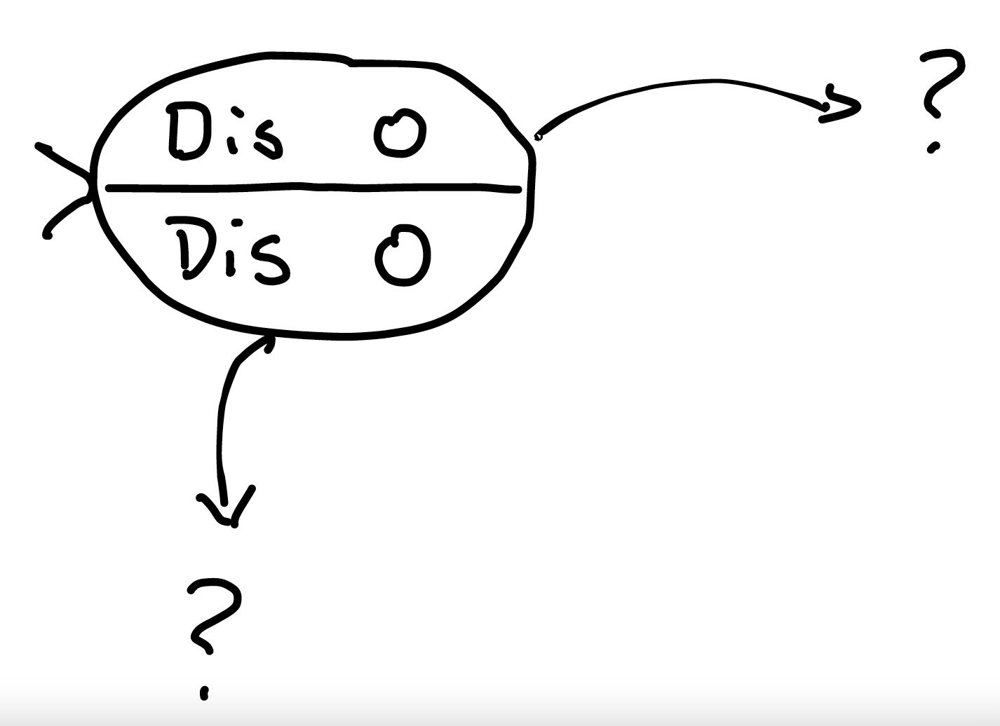
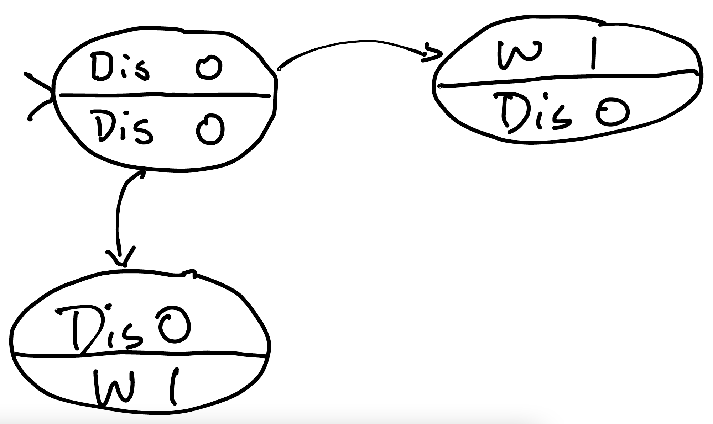
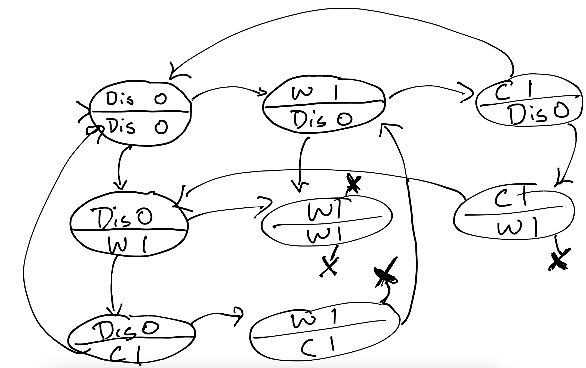
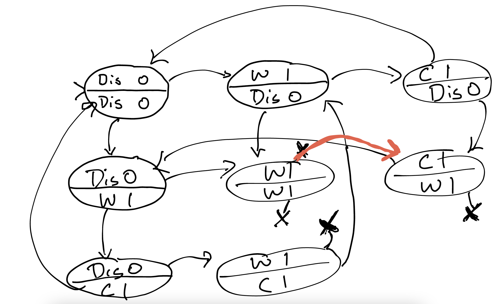

Going Beyond Assertions¶
In the last section, we were modeling this simplified (and perhaps buggy) mutual-exclusion protocol:
while(true) {
// [location: uninterested]
this.flag = true; // visible to other threads!
// [location: waiting]
while(other.flag == true);
// [location: in-cs] // "critical section"
this.flag = false;
}
Thread vs. Process
I'm going to use the terms "process" and "thread" interchangably for this model. The difference is vital when programming, but it's not important for our purposes today.
Exercise: If there are 3 possible locations for each process, and 2 possible flag values for each process, how many possible states are there overall in the system (without considering reachability)?
Think, then click!
Every process has \(3 \times 2 = 6\) possible states. If 2 processes are executing this loop, there are \(6^2 = 6 \times 6 = 36\) possible states overall in the system. (Of course, we hope that not all of them are reachable!)
Our mutual exclusion property, which says that at most one process can be running the critical section at a time, is a statement that 4 specific states are unreachable: the ones where both processes are in the critical-section location (with any possible combination of boolean flags).
That property wasn't "inductive": Forge could find transitions with a good prestate that end in one of those 4 bad states. So we enriched the invariant to also say that any thread in the waiting or critical-section locations must also have a raised flag. This prevented Forge from using many prestates it could use before: \((InCS, Waiting, 0, 0)\), for example.
Now we're going to do two things:
- build intuition for how the above actually worked; and
- talk about how we could approch verifying other, richer, kinds of property.
Drawing The Picture¶
I really don't want to draw 36 states along with all their corresponding transition arcs. But maybe I don't need to. Let's agree that there are, in principle, 36 states, but just draw the part of the system that's reachable. We'll start with the initial state: \((Un, Un, 0, 0)\) and abbrieviate location tags to make writing them convenient for us: \(Un\) for "uninterested", \(CS\) for "critical section", and \(W\) for "waiting".
TODO: redraw with "un" rather than "dis"

Fill in the rest of the reachable states and transitions; don't add unreachable states at all. You should find the picture is significantly smaller than it would be if we had drawn all states.

Keep going! In diagrams like this, where there are only 2 processes, I like to split the state and draw the transition arcs for each process moving separately in different directions. (We're assuming, for now, that only one process moves at a time, even though they are executing concurrently.)

I've marked the inability of a process to make progress with an "X"; it's a transition that can't be taken.
By drawing the entire graph of reachable states, we can see that the "bad" states are not reachable. This protocol satisfies mutual exclusion (as Forge showed us in the last section).
Other Properties¶
Just mutual exclusion isn't good enough! After all, a protocol that never gave access to the critical section would guarantee mutual exclusion. We need at least one other property, one that might turn out to be more complex. We'll get there in 2 steps.
Property: Deadlock Freedom¶
If, at some point, nobody can make progress, then surely the protocol isn't working. Both processes would be waiting forever, unable to ever actually get work done.
A state where no process can transition is called a deadlock state. Verifying that a system is free of deadlocks is a common verification goal.
Exercise: Does the system above satisfy deadlock-freedom? (You can check using the diagram we produced.)
This kind of verification problem---checking properties of a transition system---is called model checking. Interestingly, there are other kinds of verification tools that use this graph-search approach, rather than the logic- and solver-based approach that Forge uses; you'll hear these tools referred to as explicit-state model checkers and symbolic model checkers respectively.
Exercise: How could we check for deadlocks using just the graph we drew and our eyes?
Think, then click!
In the same way we looked for a failure of mutual exclusion. We seek a reachable state with no transitions out. And in this case, we find such a state.
Exercise: How could we check for deadlock in Forge?
We could either try the inductive approach, or use the finite-trace method. In the former, we would express that a "good" state is one where some transition is enabled---that is, one where the guard portion of some transition evaluates to true.
Exercise: Working from the graph you drew, how could we fix the problem?
We could add a transition from the deadlock state. Maybe we could allow the first thread to always take priority over the second:

This might manifest in the code as an extra way to escape the while loop. Of course, if we prioritize the first thread, the second thread is going to be very unhappy with this fix! But, regardless, adding this transition technically fixes the deadlock problem, and this property will now pass as well.
Property: Non-Starvation¶
Even if there are no deadlocks, it's still possible for one thread to be waiting forever. We'd prefer a system where it's impossible for one thread to be kept waiting while the other thread continues to completely hog the critical section. This property is called non-starvation; more formally, it says that every thread must always (at any point) eventually (at some point) get access to the resource.
Exercise: How could we check non-starvation in this graph?
Think, then click!
Not by looking for a single "bad state". That won't suffice.
Safety Versus Liveness: Intuition¶
Notice the differences between these properties. In particular, consider what a full counterexample trace for each must look like, if we were inclined to produce one. * For mutual-exclusion and (in this formulation) deadlock-freedom, a counterexample trace could be finite. After some number of transitions, we'd reach a state where a deadlock or failure of mutual-exclusion has occurred. At that point, it's impossible for the system to recover; we've found an issue and the trace has served its purpose. * For a failure of non-starvation, on the other hand, no finite trace can suffice. It's always possible that just ahead, the system will suddenly recover and prevent a thread from being starved. So here, we need some notion of an infinite counterexample trace such that some thread never, ever, gets access.
The difference here is a fundamental distinction in verification. We call properties that have finite counterexamples safety properties, and properties with only infinite counterexamples liveness properties.
Definitions
People often describe safety properties as "something bad never happens" and liveness properties as "something good must happen". I don't like this wording, because it assumes an understanding of "goodness" and "badness". Instead, think about what a counterexample needs to look like. Then, one kind of property really is fundamentally different from the other, without requiring a notion of "good" or "bad".
You'll usually find that a liveness property is more computationally complex to check. This doesn't mean that verifying liveness properties is always slower. It's just that we, and Forge, usually have to bring some additional tricks to bear. In the context of a finite state system, searching for an infinite counterexample amounts to looking for a reachable cycle in the graph, rather than just a single bad state.
We'll take a short break in the next section to say more about how Forge works. Then we'll return to the problem of defining infinite counterexample traces.